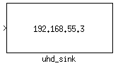
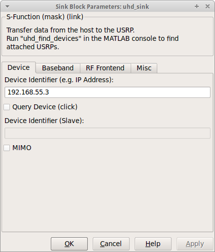
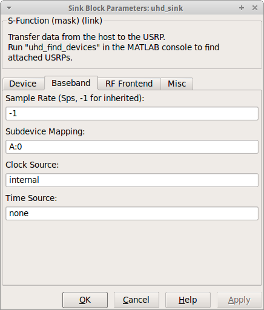
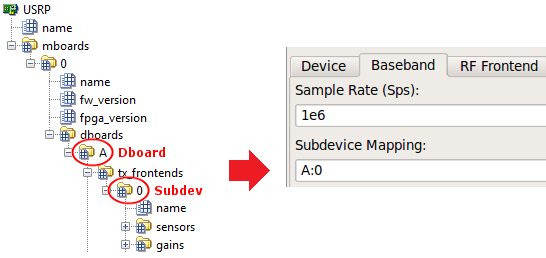
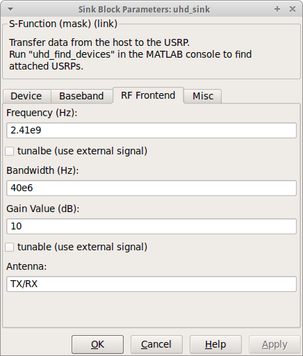
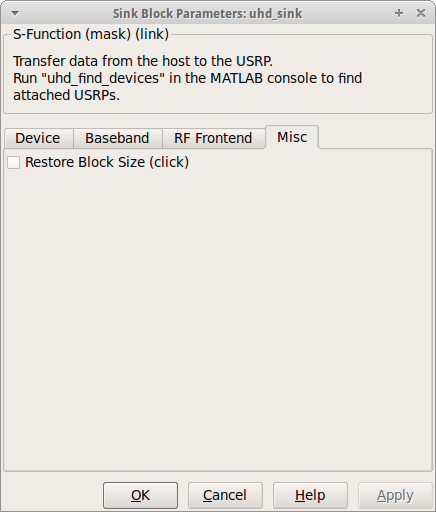

| Simulink-UHD |

| Select Tab Pane... |
|---|

Specify the identifier of the attached USRP. Possible identifiers are the IP Address (e.g. addr=192.168.55.3), the Serial Number (e.g. serial=EGR18WFRP), the Type (e.g. type=usrp2), or the Device Name (e.g. name=myUSRP). Available devices are displayed in the block description. The identifier should be non-ambiguous. In the case of an IP Address, the hint addr= can be omitted.
The Query Device checkbox acts like a push-button and displays information and parameters about the USRP (according to the identifier) using the USRP explorer. The parameters can be used to complete the whole UHD Sink mask. (Just to make sure, the checkbox can't be selected.)
Specify the IP address of the USRP slave device. This option becomes available by selecting the MIMO checkbox. To clearly set the master and the slave device, the hints should be numbered, example: Master addr0=192.168.55.2, Slave addr1=192.168.55.3.

Set the rate in Samples per second (Sps) of the samples transmitted to the USRP. Use -1 to inherit the rate from the incomming samples. The underlying S-function will determine an appropriate interpolation factor. The S-function will produce a warning in the MATLAB command window, if the exact interpolation factor isn't possible.
Determine the signal path between the DAC and the antenna. In the UHD context, each path is designated as channel. Channels are consecutively numbered starting from 0. The subdevice mapping is a vector of strings as follows: [Dboard_1:Subdev_1 Dboard_2:Subdev_2 ...]. The path Dboard_1:Subdev_1 is mapped to channel 0 (since it is the first position in the vector), Dboard_2:Subdev_2 is mapped to channel 1, and so on.
Example: With the output of the USRP explorer (tree), one possible subdevice mapping could be: [A:0].
Specify the clock source of the USRP (e.g. internal). See the board documentation for more information.
Specify the time source of the USRP (e.g. none). See the board documentation for more information.

Specify the carrier frequency in Hertz of the transmitted signal (e.g. 2.41e9). Set the tunable checkbox to tune during runtime using an additional input port
Set the bandwidth in Hertz of the daughterboard (e.g. 40e6. See the daughterboard documentation for more information.
Specify any gain or attenuation in Decibel within the gain range of the daughterboard (e.g. 10). Set the tunable checkbox to change the gain during runtime using an additional gain input port.
Specify the antenna of the mounted daughterboard (e.g. TX/RX). See the daughterboard documentation for more information.

Restore the geometric size of the UHD Sink block. The checkbox acts like a push-button and hence can't be set.
© 2012 Communications Engineering Lab • Homepage